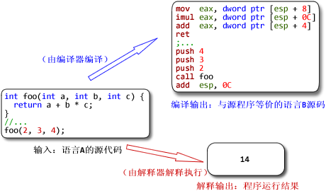
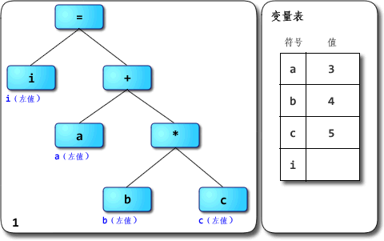
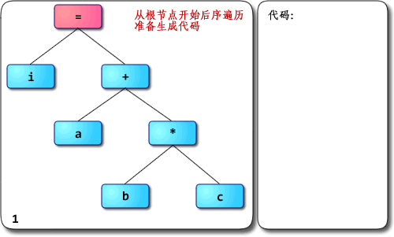
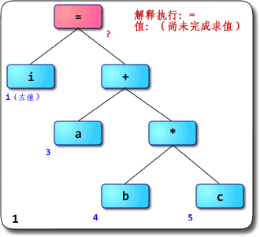
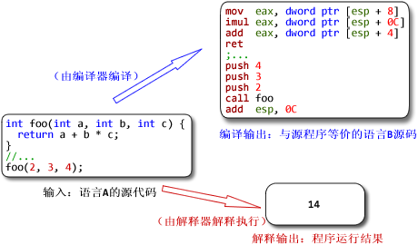
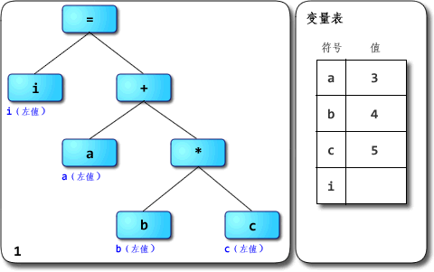
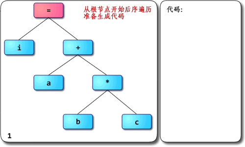
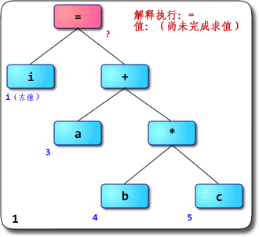

（Disclaimer：如果需要转载请先与我联系；文中图片请不要直接链接
作者：@RednaxelaFX -> http://rednaxelafx.iteye.com）
大前天收到一条PM：
我刚收到的时候很兴奋，就开始写回复。写啊写发觉已经比我平时发的帖还要长了，想着干脆把回复直接发出来好了。于是下面就是回复：
你好 ^ ^ 很抱歉拖了这么久才回复。码字和画图太耗时间了。
别说冒昧了，我只是个普通的刚毕业的学生而已，担当不起啊 =_=||||
而且我也不敢说“很”了解，只是有所接触而已。很高兴有人来一起讨论JavaScript引擎的设计与实现，总觉得身边对这个有兴趣的人不多，或者是很少冒出来讨论。如果你发个帖或者blog来讨论这方面的内容我也会很感兴趣的～
想拿出几点来讨论一下。上面提出的问题我希望能够一一给予回答，不过首先得做些铺垫。
另外先提一点：JavaScriptCore从SquirrelFish版开始是“基于寄存器”的，V8则不适合用“基于栈”或者“基于寄存器”的说法来描述。
1、解析器与解释器
解析器是parser，而解释器是interpreter。两者不是同一样东西，不应该混用。
前者是编译器/解释器的重要组成部分，也可以用在IDE之类的地方；其主要作用是进行语法分析，提取出句子的结构。广义来说输入一般是程序的源码，输出一般是语法树（syntax tree，也叫parse tree等）或抽象语法树（abstract syntax tree，AST）。进一步剥开来，广义的解析器里一般会有扫描器（scanner，也叫tokenizer或者lexical analyzer，词法分析器），以及狭义的解析器（parser，也叫syntax analyzer，语法分析器）。扫描器的输入一般是文本，经过词法分析，输出是将文本切割为单词的流。狭义的解析器输入是单词的流，经过语法分析，输出是语法树或者精简过的AST。
（在一些编译器/解释器中，解析也可能与后续的语义分析、代码生成或解释执行等步骤融合在一起，不一定真的会构造出完整的语法树。但概念上说解析器就是用来抽取句子结构用的，而语法树就是表示句子结构的方式。关于边解析边解释执行的例子，可以看看这帖的计算器。）
举例：将i = a + b * c作为源代码输入到解析器里，则广义上的解析器的工作流程如下图：

其中词法分析由扫描器完成，语法分析由狭义的解析器完成。
（嗯，说来其实“解析器”这词还是按狭义用法比较准确。把扫描器和解析器合起来叫解析器总觉得怪怪的，但不少人这么用，这里就将就下吧 =_=
不过近来“scannerless parsing”也挺流行的：不区分词法分析与语法分析，没有单独的扫描器，直接用解析器从源码生成语法树。这倒整个就是解析器了，没狭不狭义的问题）
后者则是实现程序执行的一种实现方式，与编译器相对。它直接实现程序源码的语义，输入是程序源码，输出则是执行源码得到的计算结果；编译器的输入与解释器相同，而输出是用别的语言实现了输入源码的语义的程序。通常编译器的输入语言比输出语言高级，但不一定；也有输入输出是同种语言的情况，此时编译器很可能主要用于优化代码。
举例：把同样的源码分别输入到编译器与解释器中，得到的输出不同：

值得留意的是，编译器生成出来的代码执行后的结果应该跟解释器输出的结果一样——它们都应该实现源码所指定的语义。
在很多地方都看到解析器与解释器两个不同的东西被混为一谈，感到十分无奈。
最近某本引起很多关注的书便在开篇给读者们当头一棒，介绍了“JavaScript解析机制”。“编译”和“预处理”也顺带混为一谈了，还有“预编译” 0_0
我一直以为“预编译”应该是ahead-of-time compilation的翻译，是与“即时编译”（just-in-time compilation，JIT）相对的概念。另外就是PCH（precompile header）这种用法，把以前的编译结果缓存下来称为“预编译”。把AOT、PCH跟“预处理”（preprocess）混为一谈真是诡异。算了，我还是不要淌这浑水的好……打住。
2、“解释器”到底是什么？“解释型语言”呢？
很多资料会说，Python、Ruby、JavaScript都是“解释型语言”，是通过解释器来实现的。这么说其实很容易引起误解：语言一般只会定义其抽象语义，而不会强制性要求采用某种实现方式。
例如说C一般被认为是“编译型语言”，但C的解释器也是存在的，例如Ch。同样，C++也有解释器版本的实现，例如Cint。
一般被称为“解释型语言”的是主流实现为解释器的语言，但并不是说它就无法编译。例如说经常被认为是“解释型语言”的Scheme就有好几种编译器实现，其中率先支持R6RS规范的大部分内容的是Ikarus，支持在x86上编译Scheme；它最终不是生成某种虚拟机的字节码，而是直接生成x86机器码。
解释器就是个黑箱，输入是源码，输出就是输入程序的执行结果，对用户来说中间没有独立的“编译”步骤。这非常抽象，内部是怎么实现的都没关系，只要能实现语义就行。你可以写一个C语言的解释器，里面只是先用普通的C编译器把源码编译为in-memory image，然后直接调用那个image去得到运行结果；用户拿过去，发现直接输入源码可以得到源程序对应的运行结果就满足需求了，无需在意解释器这个“黑箱子”里到底是什么。
实际上很多解释器内部是以“编译器+虚拟机”的方式来实现的，先通过编译器将源码转换为AST或者字节码，然后由虚拟机去完成实际的执行。所谓“解释型语言”并不是不用编译，而只是不需要用户显式去使用编译器得到可执行代码而已。
那么虚拟机（virtual machine，VM）又是什么？在许多不同的场合，VM有着不同的意义。如果上下文是Java、Python这类语言，那么一般指的是高级语言虚拟机（high-level language virtual machine，HLL VM），其意义是实现高级语言的语义。VM既然被称为“机器”，一般认为输入是满足某种指令集架构（instruction set architecture，ISA）的指令序列，中间转换为目标ISA的指令序列并加以执行，输出为程序的执行结果的，就是VM。源与目标ISA可以是同一种，这是所谓same-ISA VM。
前面提到解释器中的编译器的输出可能是AST，也可能是字节码之类的指令序列；一般会把执行后者的程序称为VM，而执行前者的还是笼统称为解释器或者树遍历式解释器（tree-walking interpreter）。这只是种习惯而已，并没有多少确凿的依据。只不过线性（相对于树形）的指令序列看起来更像一般真正机器会执行的指令序列而已。
其实我觉得把执行AST的也叫VM也没啥大问题。如果认同这个观点，那么把DLR看作一种VM也就可以接受了——它的“指令集”就是树形的Expression Tree。
VM并不是神奇的就能执行代码了，它也得采用某种方式去实现输入程序的语义，并且同样有几种选择：“编译”，例如微软的.NET中的CLR；“解释”，例如CPython、CRuby 1.9，许多老的JavaScript引擎等；也有介于两者之间的混合式，例如Sun的JVM，HotSpot。如果采用编译方式，VM会把输入的指令先转换为某种能被底下的系统直接执行的形式（一般就是native code），然后再执行之；如果采用解释方式，则VM会把输入的指令逐条直接执行。
换个角度说，我觉得采用编译和解释方式实现虚拟机最大的区别就在于是否存下目标代码：编译的话会把输入的源程序以某种单位（例如基本块/函数/方法/trace等）翻译生成为目标代码，并存下来（无论是存在内存中还是磁盘上，无所谓），后续执行可以复用之；解释的话则是把源程序中的指令逐条解释，不生成也不存下目标代码，后续执行没有多少可复用的信息。有些稍微先进一点的解释器可能会优化输入的源程序，把满足某些模式的指令序列合并为“超级指令”；这么做就是朝着编译的方向推进。后面讲到解释器的演化时再讨论超级指令吧。
如果一种语言的主流实现是解释器，其内部是编译器+虚拟机，而虚拟机又是采用解释方式实现的，或者内部实现是编译器+树遍历解释器，那它就是名副其实的“解释型语言”。如果内部用的虚拟机是用编译方式实现的，其实跟普遍印象中的“解释器”还是挺不同的……
可以举这样一个例子：ActionScript 3，一般都被认为是“解释型语言”对吧？但这种观点到底是把FlashPlayer整体看成一个解释器，因而AS3是“解释型语言”呢？还是认为FlashPlayer中的虚拟机采用解释执行方案，因而AS3是“解释型语言”呢？
其实Flash或Flex等从AS3生成出来的SWF文件里就包含有AS字节码（ActionScript Byte Code，ABC）。等到FlashPlayer去执行SWF文件，或者说等到AVM2（ActionScript Virtual Machine 2）去执行ABC时，又有解释器和JIT编译器两种实现。这种需要让用户显式进行编译步骤的语言，到底是不是“解释型语言”呢？呵呵。所以我一直觉得“编译型语言”跟“解释型语言”的说法太模糊，不太好。
有兴趣想体验一下从命令行编译“裸”的AS3文件得到ABC文件，再从命令行调用AVM2去执行ABC文件的同学，可以从这帖下载我之前从源码编译出来的AVM2，自己玩玩看。例如说要编译一个名为test.as的文件，用下列命令：
就是用ASC将test.as编译，得到test.abc。接着用：
就是用AVM2去执行程序了。很生动的体现出“编译器+虚拟机”的实现方式。
这个“裸”的AVM2没有带Flash或Flex的类库，能用的函数和类都有限。不过AS3语言实现是完整的。可以用print()函数来向标准输出流写东西。
Well……其实写Java程序不也是这样么？现在也确实还有很多人把Java称为“解释型语言”，完全无视Java代码通常是经过显式编译步骤才得到.class文件，而有些JVM是采用纯JIT编译方式实现的，内部没解释器，例如JRockit、Maxine VM和Jikes RVM。我愈发感到“解释型语言”是个应该避开的用语 =_=
关于虚拟机，有本很好的书绝对值得一读，《虚拟机——系统与进程的通用平台》（Virtual Machines: Versatile Platforms for Systems and Processes）。国内有影印版也有中文版，我是读了影印版，不太清楚中文版的翻译质量如何。据说翻译得还行，我无法印证。
3、基于栈与基于寄存器的指令集架构
用C的语法来写这么一个语句：
如果把它变成这种形式：
add a, b, c
那看起来就更像机器指令了，对吧？这种就是所谓“三地址指令”（3-address instruction），一般形式为：
op dest, src1, src2
许多操作都是二元运算+赋值。三地址指令正好可以指定两个源和一个目标，能非常灵活的支持二元操作与赋值的组合。ARM处理器的主要指令集就是三地址形式的。
C里要是这样写的话：
变成:
add a, b
这就是所谓“二地址指令”，一般形式为：
op dest, src
它要支持二元操作，就只能把其中一个源同时也作为目标。上面的add a, b在执行过后，就会破坏a原有的值，而b的值保持不变。x86系列的处理器就是二地址形式的。
上面提到的三地址与二地址形式的指令集，一般就是通过“基于寄存器的架构”来实现的。例如典型的RISC架构会要求除load和store以外，其它用于运算的指令的源与目标都要是寄存器。
显然，指令集可以是任意“n地址”的，n属于自然数。那么一地址形式的指令集是怎样的呢？
想像一下这样一组指令序列：
add 5
sub 3
这只指定了操作的源，那目标是什么？一般来说，这种运算的目标是被称为“累加器”（accumulator）的专用寄存器，所有运算都靠更新累加器的状态来完成。那么上面两条指令用C来写就类似：
只不过acc是“隐藏”的目标。基于累加器的架构近来比较少见了，在很老的机器上繁荣过一段时间。
那“n地址”的n如果是0的话呢？
看这样一段Java字节码：
注意那个iadd（表示整型加法）指令并没有任何参数。连源都无法指定了，零地址指令有什么用？？
零地址意味着源与目标都是隐含参数，其实现依赖于一种常见的数据结构——没错，就是栈。上面的iconst_1、iconst_2两条指令，分别向一个叫做“求值栈”（evaluation stack，也叫做operand stack“操作数栈”或者expression stack“表达式栈”）的地方压入整型常量1、2。iadd指令则从求值栈顶弹出2个值，将值相加，然后把结果压回到栈顶。istore_0指令从求值栈顶弹出一个值，并将值保存到局部变量区的第一个位置（slot 0）。
零地址形式的指令集一般就是通过“基于栈的架构”来实现的。请一定要注意，这个栈是指“求值栈”，而不是与系统调用栈（system call stack，或者就叫system stack）。千万别弄混了。有些虚拟机把求值栈实现在系统调用栈上，但两者概念上不是一个东西。
由于指令的源与目标都是隐含的，零地址指令的“密度”可以非常高——可以用更少空间放下更多条指令。因此在空间紧缺的环境中，零地址指令是种可取的设计。但零地址指令要完成一件事情，一般会比二地址或者三地址指令许多更多条指令。上面Java字节码做的加法，如果用x86指令两条就能完成了：
（好吧我犯规了，istore_0对应的保存我没写。但假如局部变量比较少的话也不必把EAX的值保存（“溢出”，register spilling）到调用栈上，就这样吧 =_=
其实就算把结果保存到栈上也就是多一条指令而已……）
一些比较老的解释器，例如CRuby在1.9引入YARV作为新的VM之前的解释器，还有SquirrleFish之前的老JavaScriptCore以及它的前身KJS，它们内部是树遍历式解释器；解释器递归遍历树，树的每个节点的操作依赖于解释其各个子节点返回的值。这种解释器里没有所谓的求值栈，也没有所谓的虚拟寄存器，所以不适合以“基于栈”或“基于寄存器”去描述。
而像V8那样直接编译JavaScript生成机器码，而不通过中间的字节码的中间表示的JavaScript引擎，它内部有虚拟寄存器的概念，但那只是普通native编译器的正常组成部分。我觉得也不应该用“基于栈”或“基于寄存器”去描述它。
V8在内部也用了“求值栈”（在V8里具体叫“表达式栈”）的概念来简化生成代码的过程，在编译过程中进行“抽象解释”，使用所谓“虚拟栈帧”来记录局部变量与求值栈的状态；但在真正生成代码的时候会做窥孔优化，消除冗余的push/pop，将许多对求值栈的操作转变为对寄存器的操作，以此提高代码质量。于是最终生成出来的代码看起来就不像是基于栈的代码了。
关于JavaScript引擎的实现方式，下文会再提到。
4、基于栈与基于寄存器架构的VM，用哪个好？
如果是要模拟现有的处理器，那没什么可选的，原本处理器采用了什么架构就只能以它为源。但HLL VM的架构通常可以自由构造，有很大的选择余地。为什么许多主流HLL VM，诸如JVM、CLI、CPython、CRuby 1.9等，都采用了基于栈的架构呢？我觉得这有三个主要原因：
·实现简单
由于指令中不必显式指定源与目标，VM可以设计得很简单，不必考虑为临时变量分配空间的问题，求值过程中的临时数据存储都让求值栈包办就行。
更新：回帖中cscript指出了这句不太准确，应该是针对基于栈架构的指令集生成代码的编译器更容易实现，而不是VM更容易实现。
·该VM是为某类资源非常匮乏的硬件而设计的
这类硬件的存储器可能很小，每一字节的资源都要节省。零地址指令比其它形式的指令更紧凑，所以是个自然的选择。
·考虑到可移植性
处理器的特性各个不同：典型的CISC处理器的通用寄存器数量很少，例如32位的x86就只有8个32位通用寄存器（如果不算EBP和ESP那就是6个，现在一般都算上）；典型的RISC处理器的各种寄存器数量多一些，例如ARM有16个32位通用寄存器，Sun的SPARC在一个寄存器窗口里则有24个通用寄存器（8 in，8 local，8 out）。
假如一个VM采用基于寄存器的架构（它接受的指令集大概就是二地址或者三地址形式的），为了高效执行，一般会希望能把源架构中的寄存器映射到实际机器上寄存器上。但是VM里有些很重要的辅助数据会经常被访问，例如一些VM会保存源指令序列的程序计数器（program counter，PC），为了效率，这些数据也得放在实际机器的寄存器里。如果源架构中寄存器的数量跟实际机器的一样，或者前者比后者更多，那源架构的寄存器就没办法都映射到实际机器的寄存器上；这样VM实现起来比较麻烦，与能够全部映射相比效率也会大打折扣。像Dalvik VM的解释器实现，就是把虚拟寄存器全部映射到栈帧（内存）里的，这跟把局部变量区与操作数栈都映射到内存里的JVM解释器实现相比实际区别不太大。
如果一个VM采用基于栈的架构，则无论在怎样的实际机器上，都很好实现——它的源架构里没有任何通用寄存器，所以实现VM时可以比较自由的分配实际机器的寄存器。于是这样的VM可移植性就比较高。作为优化，基于栈的VM可以用编译方式实现，“求值栈”实际上也可以由编译器映射到寄存器上，减轻数据移动的开销。
回到主题，基于栈与基于寄存器的架构，谁更快？看看现在的实际处理器，大多都是基于寄存器的架构，从侧面反映出它比基于栈的架构更优秀。
而对于VM来说，源架构的求值栈或者寄存器都可能是用实际机器的内存来模拟的，所以性能特性与实际硬件又有点不同。一般认为基于寄存器的架构对VM来说也是更快的，原因是：虽然零地址指令更紧凑，但完成操作需要更多的load/store指令，也意味着更多的指令分派（instruction dispatch）次数与内存访问次数；访问内存是执行速度的一个重要瓶颈，二地址或三地址指令虽然每条指令占的空间较多，但总体来说可以用更少的指令完成操作，指令分派与内存访问次数都较少。
这方面有篇被引用得很多的论文讲得比较清楚，Virtual Machine Showdown: Stack Versus Registers，是在VEE 2005发表的。VEE是Virtual Execution Environment的缩写，是ACM下SIGPLAN组织的一个会议，专门研讨虚拟机的设计与实现的。可以去找找这个会议往年的论文，很多都值得读。
5、树遍历解释器图解
在演示基于栈与基于寄存器的VM的例子前，先回头看看更原始的解释器形式。
前面提到解析器的时候用了i = a + b * c的例子，现在让我们来看看由解析器生成的AST要是交给一个树遍历解释器，会如何被解释执行呢？
用文字说不够形象，还是看图吧：

这是对AST的后序遍历：假设有一个eval(Node n)函数，用于解释AST上的每个节点；在解释一个节点时如果依赖于子树的操作，则对子节点递归调用eval(Node n)，从这些递归调用的返回值获取需要的值（或副作用）——也就是说子节点都eval好了之后，父节点才能进行自己的eval——典型的后序遍历。
（话说，上图中节点左下角有蓝色标记的说明那是节点的“内在属性”。从属性语法的角度看，如果一个节点的某个属性的值只依赖于自身或子节点，则该属性被称为“综合属性”（synthesized attribute）；如果一个节点的某个属性只依赖于自身、父节点和兄弟节点，则该属性被称为“继承属性”（inherited attribute）。上图中节点右下角的红色标记都只依赖子节点来计算，显然是综合属性。）
SquirrelFish之前的JavaScriptCore、CRuby 1.9之前的CRuby就都是采用这种方式来解释执行的。
可能需要说明的：
·左值与右值
在源代码i = a + b * c中，赋值符号左侧的i是一个标识符，表示一个变量，取的是变量的“左值”（也就是与变量i绑定的存储单元）；右侧的a、b、c虽然也是变量，但取的是它们的右值（也就是与变量绑定的存储单元内的值）。在许多编程语言中，左值与右值在语法上没有区别，它们实质的差异容易被忽视。一般来说左值可以作为右值使用，反之则不一定。例如数字1，它自身有值就是1，可以作为右值使用；但它没有与可赋值的存储单元相绑定，所以无法作为左值使用。
左值不一定只是简单的变量，还可以是数组元素或者结构体的域之类，可能由复杂的表达式所描述。因此左值也是需要计算的。
·优先级、结合性与求值顺序
这三个是不同的概念，却经常被混淆。通过AST来看就很容易理解：（假设源码是从左到右输入的）
所谓优先级，就是不同操作相邻出现时，AST节点与根的距离的关系。优先级高的操作会更远离根，优先级低的操作会更接近根。为什么？因为整棵AST是以后序遍历求值的，显然节点离根越远就越早被求值。
所谓结合性，就是当同类操作相邻出现时，操作的先后顺序同AST节点与根的距离的关系。如果是左结合，则先出现的操作对应的AST节点比后出现的操作的节点离根更远；换句话说，先出现的节点会是后出现节点的子节点。
所谓求值顺序，就是在遍历子节点时的顺序。对二元运算对应的节点来说，先遍历左子节点再遍历右子节点就是从左到右的求值顺序，反之则是从右到左的求值顺序。
这三个概念与运算的联系都很紧密，但实际描述的是不同的关系。前两者是解析器根据语法生成AST时就已经决定好的，后者则是解释执行或者生成代码而去遍历AST时决定的。
在没有副作用的环境中，给定优先级与结合性，则无论求值顺序是怎样的都能得到同样的结果；而在有副作用的环境中，求值顺序会影响结果。
赋值运算虽然是右结合的，但仍然可以用从左到右的求值顺序；事实上Java、C#等许多语言都在规范里写明表达式的求值顺序是从左到右的。上面的例子中就先遍历的=的左侧，求得i的左值；再遍历=的右侧，得到表达式的值23；最后执行=自身，完成对i的赋值。
所以如果你要问：赋值在类似C的语言里明明是右结合的运算，为什么你先遍历左子树再遍历右子树？上面的说明应该能让你发现你把结合性与求值顺序混为一谈了。
看看Java从左到右求值顺序的例子：
由javac编译，得到arr[0] = a + b对应的字节码是：
6、从树遍历解释器进化为基于栈的字节码解释器的前端
如果你看到树形结构与后序遍历，并且知道后缀记法（或者逆波兰记法，reverse Polish notation）的话，那敏锐的你或许已经察觉了：要解释执行AST，可以先通过后序遍历AST生成对应的后缀记法的操作序列，然后再解释执行该操作序列。这样就把树形结构压扁，成为了线性结构。
树遍历解释器对AST的求值其实隐式依赖于调用栈：eval(Node n)的递归调用关系是靠调用栈来维护的。后缀表达式的求值则通常显式依赖于一个栈，在遇到操作数时将其压入栈中，遇到运算时将合适数量的值从栈顶弹出进行运算，再将结果压回到栈上。这种描述看起来眼熟么？没错，后缀记法的求值中的核心数据结构就是前文提到过的“求值栈”（或者叫操作数栈，现在应该更好理解了）。后缀记法也就与基于栈的架构联系了起来：后者可以很方便的执行前者。同理，零地址指令也与树形结构联系了起来：可以通过一个栈方便的把零地址指令序列再转换回到树的形式。
Java字节码与Java源码联系紧密，前者可以看成后者的后缀记法。如果想在JVM上开发一种语义能直接映射到Java上的语言，那么编译器很好写：秘诀就是后序遍历AST。
那么让我们再来看看，同样是i = a + b * c这段源码对应的AST，生成Java字节码的例子：

（假设a、b、c、i分别被分配到局部变量区的slot 0到slot 3）
能看出Java字节码与源码间的对应关系了么？
一个Java编译器的输入是Java源代码，输出是含有Java字节码的.class文件。它里面主要包含扫描器与解析器，语义分析器（包括类型检查器/类型推导器等），代码生成器等几大部分。上图所展示的就是代码生成器的工作。对Java编译器来说，代码生成就到字节码的层次就结束了；而对native编译器来说，这里刚到生成中间表示的部分，接下去是优化与最终的代码生成。
如果你对Python、CRuby 1.9之类有所了解，会发现它们的字节码跟Java字节码在“基于栈”的这一特征上非常相似。其实它们都是由“编译器+VM”构成的，概念上就像是Java编译器与JVM融为一体一般。
从这点看，Java与Python和Ruby可以说是一条船上的。虽说内部具体实现的显著差异使得先进的JVM比简单的JVM快很多，而JVM又普遍比Python和Ruby快很多。
当解释器中用于解释执行的中间代码是树形时，其中能被称为“编译器”的部分基本上就是解析器；中间代码是线性形式（如字节码）时，其中能被称为编译器的部分就包括上述的代码生成器部分，更接近于所谓“完整的编译器”；如果虚拟机是基于寄存器架构的，那么编译器里至少还得有虚拟寄存器分配器，又更接近“完整的编译器”了。
7、基于栈与基于寄存器架构的VM的一组图解
要是拿两个分别实现了基于栈与基于寄存器架构、但没有直接联系的VM来对比，效果或许不会太好。现在恰巧有两者有紧密联系的例子——JVM与Dalvik VM。JVM的字节码主要是零地址形式的，概念上说JVM是基于栈的架构。Google Android平台上的应用程序的主要开发语言是Java，通过其中的Dalvik VM来运行Java程序。为了能正确实现语义，Dalvik VM的许多设计都考虑到与JVM的兼容性；但它却采用了基于寄存器的架构，其字节码主要是二地址/三地址混合形式的，乍一看可能让人纳闷。考虑到Android有明确的目标：面向移动设备，特别是最初要对ARM提供良好的支持。ARM9有16个32位通用寄存器，Dalvik VM的架构也常用16个虚拟寄存器（一样多……没办法把虚拟寄存器全部直接映射到硬件寄存器上了）；这样Dalvik VM就不用太顾虑可移植性的问题，优先考虑在ARM9上以高效的方式实现，发挥基于寄存器架构的优势。
Dalvik VM的主要设计者Dan Bornstein在Google I/O 2008上做过一个关于Dalvik内部实现的演讲；同一演讲也在Google Developer Day 2008 China和Japan等会议上重复过。这个演讲中Dan特别提到了Dalvik VM与JVM在字节码设计上的区别，指出Dalvik VM的字节码可以用更少指令条数、更少内存访问次数来完成操作。（看不到YouTube的请自行想办法）
眼见为实。要自己动手感受一下该例子，请先确保已经正确安装JDK 6，并从官网获取Android SDK 1.6R1。连不上官网的也请自己想办法。
创建Demo.java文件，内容为：
通过javac编译，得到Demo.class。通过javap可以看到foo()方法的字节码是：
接着用Android SDK里platforms\android-1.6\tools目录中的dx工具将Demo.class转换为dex格式。转换时可以直接以文本形式dump出dex文件的内容。使用下面的命令：
可以看到foo()方法的字节码是：
（原本的输出里还有些code-address、local-snapshot等，那些不是字节码的部分，可以忽略。）
让我们看看两个版本在概念上是如何工作的。
JVM：

（图中数字均以十六进制表示。其中字节码的一列表示的是字节码指令的实际数值，后面跟着的助记符则是其对应的文字形式。标记为红色的值是相对上一条指令的执行状态有所更新的值。下同）
说明：Java字节码以1字节为单元。上面代码中有11条指令，每条都只占1单元，共11单元==11字节。
程序计数器是用于记录程序当前执行的位置用的。对Java程序来说，每个线程都有自己的PC。PC以字节为单位记录当前运行位置里方法开头的偏移量。
每个线程都有一个Java栈，用于记录Java方法调用的“活动记录”（activation record）。Java栈以帧（frame）为单位线程的运行状态，每调用一个方法就会分配一个新的栈帧压入Java栈上，每从一个方法返回则弹出并撤销相应的栈帧。
每个栈帧包括局部变量区、求值栈（JVM规范中将其称为“操作数栈”）和其它一些信息。局部变量区用于存储方法的参数与局部变量，其中参数按源码中从左到右顺序保存在局部变量区开头的几个slot。求值栈用于保存求值的中间结果和调用别的方法的参数等。两者都以字长（32位的字）为单位，每个slot可以保存byte、short、char、int、float、reference和returnAddress等长度小于或等于32位的类型的数据；相邻两项可用于保存long和double类型的数据。每个方法所需要的局部变量区与求值栈大小都能够在编译时确定，并且记录在.class文件里。
在上面的例子中，Demo.foo()方法所需要的局部变量区大小为3个slot，需要的求值栈大小为2个slot。Java源码的a、b、c分别被分配到局部变量区的slot 0、slot 1和slot 2。可以观察到Java字节码是如何指示JVM将数据压入或弹出栈，以及数据是如何在栈与局部变量区之前流动的；可以看到数据移动的次数特别多。动画里可能不太明显，iadd和imul指令都是要从求值栈弹出两个值运算，再把结果压回到栈上的；光这样一条指令就有3次概念上的数据移动了。
对了，想提醒一下：Java的局部变量区并不需要把某个局部变量固定分配在某个slot里；不仅如此，在一个方法内某个slot甚至可能保存不同类型的数据。如何分配slot是编译器的自由。从类型安全的角度看，只要对某个slot的一次load的类型与最近一次对它的store的类型匹配，JVM的字节码校验器就不会抱怨。以后再找时间写写这方面。
Dalvik VM：

说明：Dalvik字节码以16位为单元（或许叫“双字节码”更准确 =_=|||）。上面代码中有5条指令，其中mul-int/lit8指令占2单元，其余每条都只占1单元，共6单元==12字节。
与JVM相似，在Dalvik VM中每个线程都有自己的PC和调用栈，方法调用的活动记录以帧为单位保存在调用栈上。PC记录的是以16位为单位的偏移量而不是以字节为单位的。
与JVM不同的是，Dalvik VM的栈帧中没有局部变量区与求值栈，取而代之的是一组虚拟寄存器。每个方法被调用时都会得到自己的一组虚拟寄存器。常用v0-v15这16个，也有少数指令可以访问v0-v255范围内的256个虚拟寄存器。与JVM相同的是，每个方法所需要的虚拟寄存器个数都能够在编译时确定，并且记录在.dex文件里；每个寄存器都是字长（32位），相邻的一对寄存器可用于保存64位数据。方法的参数按源码中从左到右的顺序保存在末尾的几个虚拟寄存器里。
与JVM版相比，可以发现Dalvik版程序的指令数明显减少了，数据移动次数也明显减少了，用于保存临时结果的存储单元也减少了。
你可能会抱怨：上面两个版本的代码明明不对应：JVM版到return前完好持有a、b、c三个变量的值；而Dalvik版到return-void前只持有b与c的值（分别位于v0与v1），a的值被刷掉了。
但注意到a与b的特征：它们都只在声明时接受过一次赋值，赋值的源是常量。这样就可以对它们应用常量传播，将
替换为
然后可以再对c的初始化表达式应用常量折叠，进一步替换为：
把变量的每次状态更新（包括初始赋值在内）称为变量的一次“定义”（definition），把每次访问变量（从变量读取值）称为变量的一次“使用”（use），则可以把代码整理为“使用-定义链”（简称UD链，use-define chain）。显然，一个变量的某次定义要被使用过才有意义。上面的例子经过常量传播与折叠后，我们可以分析得知变量a、b、c都只被定义而没有被使用。于是它们的定义就成为了无用代码（dead code），可以安全的被消除。
上面一段的分析用一句话描述就是：由于foo()里没有产生外部可见的副作用，所以foo()的整个方法体都可以被优化为空。经过dx工具处理后，Dalvik版程序相对JVM版确实是稍微优化了一些，不过没有影响程序的语义，程序的正确性是没问题的。这是其一。
其二是Dalvik版代码只要多分配一个虚拟寄存器就能在return-void前同时持有a、b、c三个变量的值，指令几乎没有变化：
这样比原先的版本多使用了一个虚拟寄存器，指令方面也多用了一个单元（add-int指令占2单元）；但指令的条数没变，仍然是5条，数据移动的次数也没变。
题外话1：Dalvik VM是基于寄存器的，x86也是基于寄存器的，但两者的“寄存器”却相当不同：前者的寄存器是每个方法被调用时都有自己一组私有的，后者的寄存器则是全局的。也就是说，概念上Dalvik VM字节码中不用担心保护寄存器的问题，某个方法在调用了别的方法返回过来后自己的寄存器的值肯定跟调用前一样。而x86程序在调用函数时要考虑清楚calling convention，调用方在调用前要不要保护某些寄存器的当前状态，还是说被调用方会处理好这些问题，麻烦事不少。Dalvik VM这种虚拟寄存器让人想起一些实际处理器的“寄存器窗口”，例如SPARC的Register Windows也是保证每个函数都觉得自己有“私有的一组寄存器”，减轻了在代码里处理寄存器保护的麻烦——扔给硬件和操作系统解决了。IA-64也有寄存器窗口的概念。
（当然，Dalvik VM与x86的“寄存器”一个是虚拟寄存器一个是真实硬件的ISA提供的寄存器，本来也不在一个级别上…上面这段只是讨论寄存器的语义。）
题外话2：Dalvik的.dex文件在未压缩状态下的体积通常比同等内容的.jar文件在deflate压缩后还要小。但光从字节码看，Java字节码几乎总是比Dalvik的小，那.dex文件的体积是从哪里来减出来的呢？这主要得益与.dex文件对常量池的压缩，一个.dex文件中所有类都共享常量池，使得相同的字符串、相同的数字常量等都只出现一次，自然能大大减小体积。相比之下，.jar文件中每个类都持有自己的常量池，诸如"Ljava/lang/Object;"这种常见的字符串会被重复多次。Sun自己也有进一步压缩JAR的工具，Pack200，对应的标准是JSR 200。它的主要应用场景是作为JAR的网络传输格式，以更高的压缩比来减少文件传输时间。在官方文档提到了Pack200所用到的压缩技巧，
再次提醒注意，上面的描述是针对概念上的JVM与Dalvik VM，而不是针对它们的具体实现。实现VM时可以采用许多优化技巧去减少性能损失，使得实际的运行方式与概念中的不完全相符，只要最终的运行结果满足原本概念上的VM所实现的语义就行。
===========================================================================
上面“简单”的提了些讨论点，不过还没具体到JavaScript引擎，抱歉。弄得太长了，只好在这里先拆分一次……有些东西想写的，洗个澡又忘记了。等想起来再补充 orz
“简单”是相对于实际应该掌握的信息量而言。上面写的都还没挠上痒痒，心虚。
Anyway。根据拆分的现状，下一篇应该是讨论动态语言与编译的问题，然后再下一篇会看看解释器的演化方法，再接着会看看JavaScript引擎的状况（主要针对V8和Nitro，也会谈谈Tamarin。就不讨论JScript了）。
关于推荐资料，在“我的收藏”的virtual machine标签里就有不少值得一读的资料。如果只是对JavaScript引擎相关感兴趣的话也可以选着读些。我的收藏里还有v8和tamarin等标签的，资料有的是 ^ ^
能有耐心读到结尾的同学们，欢迎提出意见和建议，以及指出文中的错漏 ^_^
不像抓到虫就给美分的大师，我没那种信心……错漏难免，我也需要进一步学习。拜托大家了～
P.S. 画图真的很辛苦，加上JavaEye的带宽也不是无限的……所以拜托不要直接链接这帖里的图 <(_ _)>
有需要原始图片的可以跟我联系。我是画成多帧PNG然后转换为GIF发出来的。上面的PNG图片都还保留有原始的图层信息，要拿去再编辑也很方便 ^ ^
更新1：
原本在树遍历解释器图解的小节中，我用的是这幅图：

其实上图画得不准确，a、b、c的右值不应该画在节点上的；节点应该只保存了它们的左值才对，要获取对应的右值就要查询变量表。我修改了图更新到正文了。原本的图里对i的赋值看起来很奇怪，就像是遍历过程经过了两次i节点一般，而事实不是那样的。
作者：@RednaxelaFX -> http://rednaxelafx.iteye.com）
大前天收到一条PM：
引用
你好，很冒昧的向你发短消息，我现在在看JS引擎，能过看博客发现你对js engine很了解，我想请教一下你 基于栈的解析器与基于寄存器的解析器有什么同，javascriptcore是基于寄存器的，V8是基于栈的，能不能说一下这两者有什么一样吗？能推荐一点资料吗？谢谢。
我刚收到的时候很兴奋，就开始写回复。写啊写发觉已经比我平时发的帖还要长了，想着干脆把回复直接发出来好了。于是下面就是回复：
你好 ^ ^ 很抱歉拖了这么久才回复。码字和画图太耗时间了。
别说冒昧了，我只是个普通的刚毕业的学生而已，担当不起啊 =_=||||
而且我也不敢说“很”了解，只是有所接触而已。很高兴有人来一起讨论JavaScript引擎的设计与实现，总觉得身边对这个有兴趣的人不多，或者是很少冒出来讨论。如果你发个帖或者blog来讨论这方面的内容我也会很感兴趣的～
想拿出几点来讨论一下。上面提出的问题我希望能够一一给予回答，不过首先得做些铺垫。
另外先提一点：JavaScriptCore从SquirrelFish版开始是“基于寄存器”的，V8则不适合用“基于栈”或者“基于寄存器”的说法来描述。
1、解析器与解释器
解析器是parser，而解释器是interpreter。两者不是同一样东西，不应该混用。
前者是编译器/解释器的重要组成部分，也可以用在IDE之类的地方；其主要作用是进行语法分析，提取出句子的结构。广义来说输入一般是程序的源码，输出一般是语法树（syntax tree，也叫parse tree等）或抽象语法树（abstract syntax tree，AST）。进一步剥开来，广义的解析器里一般会有扫描器（scanner，也叫tokenizer或者lexical analyzer，词法分析器），以及狭义的解析器（parser，也叫syntax analyzer，语法分析器）。扫描器的输入一般是文本，经过词法分析，输出是将文本切割为单词的流。狭义的解析器输入是单词的流，经过语法分析，输出是语法树或者精简过的AST。
（在一些编译器/解释器中，解析也可能与后续的语义分析、代码生成或解释执行等步骤融合在一起，不一定真的会构造出完整的语法树。但概念上说解析器就是用来抽取句子结构用的，而语法树就是表示句子结构的方式。关于边解析边解释执行的例子，可以看看这帖的计算器。）
举例：将i = a + b * c作为源代码输入到解析器里，则广义上的解析器的工作流程如下图：
其中词法分析由扫描器完成，语法分析由狭义的解析器完成。
（嗯，说来其实“解析器”这词还是按狭义用法比较准确。把扫描器和解析器合起来叫解析器总觉得怪怪的，但不少人这么用，这里就将就下吧 =_=
不过近来“scannerless parsing”也挺流行的：不区分词法分析与语法分析，没有单独的扫描器，直接用解析器从源码生成语法树。这倒整个就是解析器了，没狭不狭义的问题）
后者则是实现程序执行的一种实现方式，与编译器相对。它直接实现程序源码的语义，输入是程序源码，输出则是执行源码得到的计算结果；编译器的输入与解释器相同，而输出是用别的语言实现了输入源码的语义的程序。通常编译器的输入语言比输出语言高级，但不一定；也有输入输出是同种语言的情况，此时编译器很可能主要用于优化代码。
举例：把同样的源码分别输入到编译器与解释器中，得到的输出不同：

值得留意的是，编译器生成出来的代码执行后的结果应该跟解释器输出的结果一样——它们都应该实现源码所指定的语义。
在很多地方都看到解析器与解释器两个不同的东西被混为一谈，感到十分无奈。
最近某本引起很多关注的书便在开篇给读者们当头一棒，介绍了“JavaScript解析机制”。“编译”和“预处理”也顺带混为一谈了，还有“预编译” 0_0
我一直以为“预编译”应该是ahead-of-time compilation的翻译，是与“即时编译”（just-in-time compilation，JIT）相对的概念。另外就是PCH（precompile header）这种用法，把以前的编译结果缓存下来称为“预编译”。把AOT、PCH跟“预处理”（preprocess）混为一谈真是诡异。算了，我还是不要淌这浑水的好……打住。
2、“解释器”到底是什么？“解释型语言”呢？
很多资料会说，Python、Ruby、JavaScript都是“解释型语言”，是通过解释器来实现的。这么说其实很容易引起误解：语言一般只会定义其抽象语义，而不会强制性要求采用某种实现方式。
例如说C一般被认为是“编译型语言”，但C的解释器也是存在的，例如Ch。同样，C++也有解释器版本的实现，例如Cint。
一般被称为“解释型语言”的是主流实现为解释器的语言，但并不是说它就无法编译。例如说经常被认为是“解释型语言”的Scheme就有好几种编译器实现，其中率先支持R6RS规范的大部分内容的是Ikarus，支持在x86上编译Scheme；它最终不是生成某种虚拟机的字节码，而是直接生成x86机器码。
解释器就是个黑箱，输入是源码，输出就是输入程序的执行结果，对用户来说中间没有独立的“编译”步骤。这非常抽象，内部是怎么实现的都没关系，只要能实现语义就行。你可以写一个C语言的解释器，里面只是先用普通的C编译器把源码编译为in-memory image，然后直接调用那个image去得到运行结果；用户拿过去，发现直接输入源码可以得到源程序对应的运行结果就满足需求了，无需在意解释器这个“黑箱子”里到底是什么。
实际上很多解释器内部是以“编译器+虚拟机”的方式来实现的，先通过编译器将源码转换为AST或者字节码，然后由虚拟机去完成实际的执行。所谓“解释型语言”并不是不用编译，而只是不需要用户显式去使用编译器得到可执行代码而已。
那么虚拟机（virtual machine，VM）又是什么？在许多不同的场合，VM有着不同的意义。如果上下文是Java、Python这类语言，那么一般指的是高级语言虚拟机（high-level language virtual machine，HLL VM），其意义是实现高级语言的语义。VM既然被称为“机器”，一般认为输入是满足某种指令集架构（instruction set architecture，ISA）的指令序列，中间转换为目标ISA的指令序列并加以执行，输出为程序的执行结果的，就是VM。源与目标ISA可以是同一种，这是所谓same-ISA VM。
前面提到解释器中的编译器的输出可能是AST，也可能是字节码之类的指令序列；一般会把执行后者的程序称为VM，而执行前者的还是笼统称为解释器或者树遍历式解释器（tree-walking interpreter）。这只是种习惯而已，并没有多少确凿的依据。只不过线性（相对于树形）的指令序列看起来更像一般真正机器会执行的指令序列而已。
其实我觉得把执行AST的也叫VM也没啥大问题。如果认同这个观点，那么把DLR看作一种VM也就可以接受了——它的“指令集”就是树形的Expression Tree。
VM并不是神奇的就能执行代码了，它也得采用某种方式去实现输入程序的语义，并且同样有几种选择：“编译”，例如微软的.NET中的CLR；“解释”，例如CPython、CRuby 1.9，许多老的JavaScript引擎等；也有介于两者之间的混合式，例如Sun的JVM，HotSpot。如果采用编译方式，VM会把输入的指令先转换为某种能被底下的系统直接执行的形式（一般就是native code），然后再执行之；如果采用解释方式，则VM会把输入的指令逐条直接执行。
换个角度说，我觉得采用编译和解释方式实现虚拟机最大的区别就在于是否存下目标代码：编译的话会把输入的源程序以某种单位（例如基本块/函数/方法/trace等）翻译生成为目标代码，并存下来（无论是存在内存中还是磁盘上，无所谓），后续执行可以复用之；解释的话则是把源程序中的指令逐条解释，不生成也不存下目标代码，后续执行没有多少可复用的信息。有些稍微先进一点的解释器可能会优化输入的源程序，把满足某些模式的指令序列合并为“超级指令”；这么做就是朝着编译的方向推进。后面讲到解释器的演化时再讨论超级指令吧。
如果一种语言的主流实现是解释器，其内部是编译器+虚拟机，而虚拟机又是采用解释方式实现的，或者内部实现是编译器+树遍历解释器，那它就是名副其实的“解释型语言”。如果内部用的虚拟机是用编译方式实现的，其实跟普遍印象中的“解释器”还是挺不同的……
可以举这样一个例子：ActionScript 3，一般都被认为是“解释型语言”对吧？但这种观点到底是把FlashPlayer整体看成一个解释器，因而AS3是“解释型语言”呢？还是认为FlashPlayer中的虚拟机采用解释执行方案，因而AS3是“解释型语言”呢？
其实Flash或Flex等从AS3生成出来的SWF文件里就包含有AS字节码（ActionScript Byte Code，ABC）。等到FlashPlayer去执行SWF文件，或者说等到AVM2（ActionScript Virtual Machine 2）去执行ABC时，又有解释器和JIT编译器两种实现。这种需要让用户显式进行编译步骤的语言，到底是不是“解释型语言”呢？呵呵。所以我一直觉得“编译型语言”跟“解释型语言”的说法太模糊，不太好。
有兴趣想体验一下从命令行编译“裸”的AS3文件得到ABC文件，再从命令行调用AVM2去执行ABC文件的同学，可以从这帖下载我之前从源码编译出来的AVM2，自己玩玩看。例如说要编译一个名为test.as的文件，用下列命令：
- java -jar asc.jar -import builtin.abc -import toplevel.abc test.as
就是用ASC将test.as编译，得到test.abc。接着用：
- avmplus test.abc
就是用AVM2去执行程序了。很生动的体现出“编译器+虚拟机”的实现方式。
这个“裸”的AVM2没有带Flash或Flex的类库，能用的函数和类都有限。不过AS3语言实现是完整的。可以用print()函数来向标准输出流写东西。
Well……其实写Java程序不也是这样么？现在也确实还有很多人把Java称为“解释型语言”，完全无视Java代码通常是经过显式编译步骤才得到.class文件，而有些JVM是采用纯JIT编译方式实现的，内部没解释器，例如JRockit、Maxine VM和Jikes RVM。我愈发感到“解释型语言”是个应该避开的用语 =_=
关于虚拟机，有本很好的书绝对值得一读，《虚拟机——系统与进程的通用平台》（Virtual Machines: Versatile Platforms for Systems and Processes）。国内有影印版也有中文版，我是读了影印版，不太清楚中文版的翻译质量如何。据说翻译得还行，我无法印证。
3、基于栈与基于寄存器的指令集架构
用C的语法来写这么一个语句：
- a = b + c;
如果把它变成这种形式：
add a, b, c
那看起来就更像机器指令了，对吧？这种就是所谓“三地址指令”（3-address instruction），一般形式为：
op dest, src1, src2
许多操作都是二元运算+赋值。三地址指令正好可以指定两个源和一个目标，能非常灵活的支持二元操作与赋值的组合。ARM处理器的主要指令集就是三地址形式的。
C里要是这样写的话：
- a += b;
变成:
add a, b
这就是所谓“二地址指令”，一般形式为：
op dest, src
它要支持二元操作，就只能把其中一个源同时也作为目标。上面的add a, b在执行过后，就会破坏a原有的值，而b的值保持不变。x86系列的处理器就是二地址形式的。
上面提到的三地址与二地址形式的指令集，一般就是通过“基于寄存器的架构”来实现的。例如典型的RISC架构会要求除load和store以外，其它用于运算的指令的源与目标都要是寄存器。
显然，指令集可以是任意“n地址”的，n属于自然数。那么一地址形式的指令集是怎样的呢？
想像一下这样一组指令序列：
add 5
sub 3
这只指定了操作的源，那目标是什么？一般来说，这种运算的目标是被称为“累加器”（accumulator）的专用寄存器，所有运算都靠更新累加器的状态来完成。那么上面两条指令用C来写就类似：
- acc += 5;
- acc -= 3;
只不过acc是“隐藏”的目标。基于累加器的架构近来比较少见了，在很老的机器上繁荣过一段时间。
那“n地址”的n如果是0的话呢？
看这样一段Java字节码：
- iconst_1
- iconst_2
- iadd
- istore_0
注意那个iadd（表示整型加法）指令并没有任何参数。连源都无法指定了，零地址指令有什么用？？
零地址意味着源与目标都是隐含参数，其实现依赖于一种常见的数据结构——没错，就是栈。上面的iconst_1、iconst_2两条指令，分别向一个叫做“求值栈”（evaluation stack，也叫做operand stack“操作数栈”或者expression stack“表达式栈”）的地方压入整型常量1、2。iadd指令则从求值栈顶弹出2个值，将值相加，然后把结果压回到栈顶。istore_0指令从求值栈顶弹出一个值，并将值保存到局部变量区的第一个位置（slot 0）。
零地址形式的指令集一般就是通过“基于栈的架构”来实现的。请一定要注意，这个栈是指“求值栈”，而不是与系统调用栈（system call stack，或者就叫system stack）。千万别弄混了。有些虚拟机把求值栈实现在系统调用栈上，但两者概念上不是一个东西。
由于指令的源与目标都是隐含的，零地址指令的“密度”可以非常高——可以用更少空间放下更多条指令。因此在空间紧缺的环境中，零地址指令是种可取的设计。但零地址指令要完成一件事情，一般会比二地址或者三地址指令许多更多条指令。上面Java字节码做的加法，如果用x86指令两条就能完成了：
- mov eax, 1
- add eax, 2
（好吧我犯规了，istore_0对应的保存我没写。但假如局部变量比较少的话也不必把EAX的值保存（“溢出”，register spilling）到调用栈上，就这样吧 =_=
其实就算把结果保存到栈上也就是多一条指令而已……）
一些比较老的解释器，例如CRuby在1.9引入YARV作为新的VM之前的解释器，还有SquirrleFish之前的老JavaScriptCore以及它的前身KJS，它们内部是树遍历式解释器；解释器递归遍历树，树的每个节点的操作依赖于解释其各个子节点返回的值。这种解释器里没有所谓的求值栈，也没有所谓的虚拟寄存器，所以不适合以“基于栈”或“基于寄存器”去描述。
而像V8那样直接编译JavaScript生成机器码，而不通过中间的字节码的中间表示的JavaScript引擎，它内部有虚拟寄存器的概念，但那只是普通native编译器的正常组成部分。我觉得也不应该用“基于栈”或“基于寄存器”去描述它。
V8在内部也用了“求值栈”（在V8里具体叫“表达式栈”）的概念来简化生成代码的过程，在编译过程中进行“抽象解释”，使用所谓“虚拟栈帧”来记录局部变量与求值栈的状态；但在真正生成代码的时候会做窥孔优化，消除冗余的push/pop，将许多对求值栈的操作转变为对寄存器的操作，以此提高代码质量。于是最终生成出来的代码看起来就不像是基于栈的代码了。
关于JavaScript引擎的实现方式，下文会再提到。
4、基于栈与基于寄存器架构的VM，用哪个好？
如果是要模拟现有的处理器，那没什么可选的，原本处理器采用了什么架构就只能以它为源。但HLL VM的架构通常可以自由构造，有很大的选择余地。为什么许多主流HLL VM，诸如JVM、CLI、CPython、CRuby 1.9等，都采用了基于栈的架构呢？我觉得这有三个主要原因：
·实现简单
由于指令中不必显式指定源与目标，VM可以设计得很简单，不必考虑为临时变量分配空间的问题，求值过程中的临时数据存储都让求值栈包办就行。
更新：回帖中cscript指出了这句不太准确，应该是针对基于栈架构的指令集生成代码的编译器更容易实现，而不是VM更容易实现。
·该VM是为某类资源非常匮乏的硬件而设计的
这类硬件的存储器可能很小，每一字节的资源都要节省。零地址指令比其它形式的指令更紧凑，所以是个自然的选择。
·考虑到可移植性
处理器的特性各个不同：典型的CISC处理器的通用寄存器数量很少，例如32位的x86就只有8个32位通用寄存器（如果不算EBP和ESP那就是6个，现在一般都算上）；典型的RISC处理器的各种寄存器数量多一些，例如ARM有16个32位通用寄存器，Sun的SPARC在一个寄存器窗口里则有24个通用寄存器（8 in，8 local，8 out）。
假如一个VM采用基于寄存器的架构（它接受的指令集大概就是二地址或者三地址形式的），为了高效执行，一般会希望能把源架构中的寄存器映射到实际机器上寄存器上。但是VM里有些很重要的辅助数据会经常被访问，例如一些VM会保存源指令序列的程序计数器（program counter，PC），为了效率，这些数据也得放在实际机器的寄存器里。如果源架构中寄存器的数量跟实际机器的一样，或者前者比后者更多，那源架构的寄存器就没办法都映射到实际机器的寄存器上；这样VM实现起来比较麻烦，与能够全部映射相比效率也会大打折扣。像Dalvik VM的解释器实现，就是把虚拟寄存器全部映射到栈帧（内存）里的，这跟把局部变量区与操作数栈都映射到内存里的JVM解释器实现相比实际区别不太大。
如果一个VM采用基于栈的架构，则无论在怎样的实际机器上，都很好实现——它的源架构里没有任何通用寄存器，所以实现VM时可以比较自由的分配实际机器的寄存器。于是这样的VM可移植性就比较高。作为优化，基于栈的VM可以用编译方式实现，“求值栈”实际上也可以由编译器映射到寄存器上，减轻数据移动的开销。
回到主题，基于栈与基于寄存器的架构，谁更快？看看现在的实际处理器，大多都是基于寄存器的架构，从侧面反映出它比基于栈的架构更优秀。
而对于VM来说，源架构的求值栈或者寄存器都可能是用实际机器的内存来模拟的，所以性能特性与实际硬件又有点不同。一般认为基于寄存器的架构对VM来说也是更快的，原因是：虽然零地址指令更紧凑，但完成操作需要更多的load/store指令，也意味着更多的指令分派（instruction dispatch）次数与内存访问次数；访问内存是执行速度的一个重要瓶颈，二地址或三地址指令虽然每条指令占的空间较多，但总体来说可以用更少的指令完成操作，指令分派与内存访问次数都较少。
这方面有篇被引用得很多的论文讲得比较清楚，Virtual Machine Showdown: Stack Versus Registers，是在VEE 2005发表的。VEE是Virtual Execution Environment的缩写，是ACM下SIGPLAN组织的一个会议，专门研讨虚拟机的设计与实现的。可以去找找这个会议往年的论文，很多都值得读。
5、树遍历解释器图解
在演示基于栈与基于寄存器的VM的例子前，先回头看看更原始的解释器形式。
前面提到解析器的时候用了i = a + b * c的例子，现在让我们来看看由解析器生成的AST要是交给一个树遍历解释器，会如何被解释执行呢？
用文字说不够形象，还是看图吧：

这是对AST的后序遍历：假设有一个eval(Node n)函数，用于解释AST上的每个节点；在解释一个节点时如果依赖于子树的操作，则对子节点递归调用eval(Node n)，从这些递归调用的返回值获取需要的值（或副作用）——也就是说子节点都eval好了之后，父节点才能进行自己的eval——典型的后序遍历。
（话说，上图中节点左下角有蓝色标记的说明那是节点的“内在属性”。从属性语法的角度看，如果一个节点的某个属性的值只依赖于自身或子节点，则该属性被称为“综合属性”（synthesized attribute）；如果一个节点的某个属性只依赖于自身、父节点和兄弟节点，则该属性被称为“继承属性”（inherited attribute）。上图中节点右下角的红色标记都只依赖子节点来计算，显然是综合属性。）
SquirrelFish之前的JavaScriptCore、CRuby 1.9之前的CRuby就都是采用这种方式来解释执行的。
可能需要说明的：
·左值与右值
在源代码i = a + b * c中，赋值符号左侧的i是一个标识符，表示一个变量，取的是变量的“左值”（也就是与变量i绑定的存储单元）；右侧的a、b、c虽然也是变量，但取的是它们的右值（也就是与变量绑定的存储单元内的值）。在许多编程语言中，左值与右值在语法上没有区别，它们实质的差异容易被忽视。一般来说左值可以作为右值使用，反之则不一定。例如数字1，它自身有值就是1，可以作为右值使用；但它没有与可赋值的存储单元相绑定，所以无法作为左值使用。
左值不一定只是简单的变量，还可以是数组元素或者结构体的域之类，可能由复杂的表达式所描述。因此左值也是需要计算的。
·优先级、结合性与求值顺序
这三个是不同的概念，却经常被混淆。通过AST来看就很容易理解：（假设源码是从左到右输入的）
所谓优先级，就是不同操作相邻出现时，AST节点与根的距离的关系。优先级高的操作会更远离根，优先级低的操作会更接近根。为什么？因为整棵AST是以后序遍历求值的，显然节点离根越远就越早被求值。
所谓结合性，就是当同类操作相邻出现时，操作的先后顺序同AST节点与根的距离的关系。如果是左结合，则先出现的操作对应的AST节点比后出现的操作的节点离根更远；换句话说，先出现的节点会是后出现节点的子节点。
所谓求值顺序，就是在遍历子节点时的顺序。对二元运算对应的节点来说，先遍历左子节点再遍历右子节点就是从左到右的求值顺序，反之则是从右到左的求值顺序。
这三个概念与运算的联系都很紧密，但实际描述的是不同的关系。前两者是解析器根据语法生成AST时就已经决定好的，后者则是解释执行或者生成代码而去遍历AST时决定的。
在没有副作用的环境中，给定优先级与结合性，则无论求值顺序是怎样的都能得到同样的结果；而在有副作用的环境中，求值顺序会影响结果。
赋值运算虽然是右结合的，但仍然可以用从左到右的求值顺序；事实上Java、C#等许多语言都在规范里写明表达式的求值顺序是从左到右的。上面的例子中就先遍历的=的左侧，求得i的左值；再遍历=的右侧，得到表达式的值23；最后执行=自身，完成对i的赋值。
所以如果你要问：赋值在类似C的语言里明明是右结合的运算，为什么你先遍历左子树再遍历右子树？上面的说明应该能让你发现你把结合性与求值顺序混为一谈了。
看看Java从左到右求值顺序的例子：
- public class EvalOrderDemo {
- public static void main(String[] args) {
- int[] arr = new int[1];
- int a = 1;
- int b = 2;
- arr[0] = a + b;
- }
- }
由javac编译，得到arr[0] = a + b对应的字节码是：
- // 左子树：数组下标
- // a[0]
- aload_1
- iconst_0
- // 右子树：加法
- // a
- iload_2
- // b
- iload_3
- // +
- iadd
- // 根节点：赋值
- iastore
6、从树遍历解释器进化为基于栈的字节码解释器的前端
如果你看到树形结构与后序遍历，并且知道后缀记法（或者逆波兰记法，reverse Polish notation）的话，那敏锐的你或许已经察觉了：要解释执行AST，可以先通过后序遍历AST生成对应的后缀记法的操作序列，然后再解释执行该操作序列。这样就把树形结构压扁，成为了线性结构。
树遍历解释器对AST的求值其实隐式依赖于调用栈：eval(Node n)的递归调用关系是靠调用栈来维护的。后缀表达式的求值则通常显式依赖于一个栈，在遇到操作数时将其压入栈中，遇到运算时将合适数量的值从栈顶弹出进行运算，再将结果压回到栈上。这种描述看起来眼熟么？没错，后缀记法的求值中的核心数据结构就是前文提到过的“求值栈”（或者叫操作数栈，现在应该更好理解了）。后缀记法也就与基于栈的架构联系了起来：后者可以很方便的执行前者。同理，零地址指令也与树形结构联系了起来：可以通过一个栈方便的把零地址指令序列再转换回到树的形式。
Java字节码与Java源码联系紧密，前者可以看成后者的后缀记法。如果想在JVM上开发一种语义能直接映射到Java上的语言，那么编译器很好写：秘诀就是后序遍历AST。
那么让我们再来看看，同样是i = a + b * c这段源码对应的AST，生成Java字节码的例子：

（假设a、b、c、i分别被分配到局部变量区的slot 0到slot 3）
能看出Java字节码与源码间的对应关系了么？
一个Java编译器的输入是Java源代码，输出是含有Java字节码的.class文件。它里面主要包含扫描器与解析器，语义分析器（包括类型检查器/类型推导器等），代码生成器等几大部分。上图所展示的就是代码生成器的工作。对Java编译器来说，代码生成就到字节码的层次就结束了；而对native编译器来说，这里刚到生成中间表示的部分，接下去是优化与最终的代码生成。
如果你对Python、CRuby 1.9之类有所了解，会发现它们的字节码跟Java字节码在“基于栈”的这一特征上非常相似。其实它们都是由“编译器+VM”构成的，概念上就像是Java编译器与JVM融为一体一般。
从这点看，Java与Python和Ruby可以说是一条船上的。虽说内部具体实现的显著差异使得先进的JVM比简单的JVM快很多，而JVM又普遍比Python和Ruby快很多。
当解释器中用于解释执行的中间代码是树形时，其中能被称为“编译器”的部分基本上就是解析器；中间代码是线性形式（如字节码）时，其中能被称为编译器的部分就包括上述的代码生成器部分，更接近于所谓“完整的编译器”；如果虚拟机是基于寄存器架构的，那么编译器里至少还得有虚拟寄存器分配器，又更接近“完整的编译器”了。
7、基于栈与基于寄存器架构的VM的一组图解
要是拿两个分别实现了基于栈与基于寄存器架构、但没有直接联系的VM来对比，效果或许不会太好。现在恰巧有两者有紧密联系的例子——JVM与Dalvik VM。JVM的字节码主要是零地址形式的，概念上说JVM是基于栈的架构。Google Android平台上的应用程序的主要开发语言是Java，通过其中的Dalvik VM来运行Java程序。为了能正确实现语义，Dalvik VM的许多设计都考虑到与JVM的兼容性；但它却采用了基于寄存器的架构，其字节码主要是二地址/三地址混合形式的，乍一看可能让人纳闷。考虑到Android有明确的目标：面向移动设备，特别是最初要对ARM提供良好的支持。ARM9有16个32位通用寄存器，Dalvik VM的架构也常用16个虚拟寄存器（一样多……没办法把虚拟寄存器全部直接映射到硬件寄存器上了）；这样Dalvik VM就不用太顾虑可移植性的问题，优先考虑在ARM9上以高效的方式实现，发挥基于寄存器架构的优势。
Dalvik VM的主要设计者Dan Bornstein在Google I/O 2008上做过一个关于Dalvik内部实现的演讲；同一演讲也在Google Developer Day 2008 China和Japan等会议上重复过。这个演讲中Dan特别提到了Dalvik VM与JVM在字节码设计上的区别，指出Dalvik VM的字节码可以用更少指令条数、更少内存访问次数来完成操作。（看不到YouTube的请自行想办法）
眼见为实。要自己动手感受一下该例子，请先确保已经正确安装JDK 6，并从官网获取Android SDK 1.6R1。连不上官网的也请自己想办法。
创建Demo.java文件，内容为：
- public class Demo {
- public static void foo() {
- int a = 1;
- int b = 2;
- int c = (a + b) * 5;
- }
- }
通过javac编译，得到Demo.class。通过javap可以看到foo()方法的字节码是：
- 0: iconst_1
- 1: istore_0
- 2: iconst_2
- 3: istore_1
- 4: iload_0
- 5: iload_1
- 6: iadd
- 7: iconst_5
- 8: imul
- 9: istore_2
- 10: return
接着用Android SDK里platforms\android-1.6\tools目录中的dx工具将Demo.class转换为dex格式。转换时可以直接以文本形式dump出dex文件的内容。使用下面的命令：
- dx --dex --verbose --dump-to=Demo.dex.txt --dump-method=Demo.foo --verbose-dump Demo.class
可以看到foo()方法的字节码是：
- 0000: const/4 v0, #int 1 // #1
- 0001: const/4 v1, #int 2 // #2
- 0002: add-int/2addr v0, v1
- 0003: mul-int/lit8 v0, v0, #int 5 // #05
- 0005: return-void
（原本的输出里还有些code-address、local-snapshot等，那些不是字节码的部分，可以忽略。）
让我们看看两个版本在概念上是如何工作的。
JVM：
（图中数字均以十六进制表示。其中字节码的一列表示的是字节码指令的实际数值，后面跟着的助记符则是其对应的文字形式。标记为红色的值是相对上一条指令的执行状态有所更新的值。下同）
说明：Java字节码以1字节为单元。上面代码中有11条指令，每条都只占1单元，共11单元==11字节。
程序计数器是用于记录程序当前执行的位置用的。对Java程序来说，每个线程都有自己的PC。PC以字节为单位记录当前运行位置里方法开头的偏移量。
每个线程都有一个Java栈，用于记录Java方法调用的“活动记录”（activation record）。Java栈以帧（frame）为单位线程的运行状态，每调用一个方法就会分配一个新的栈帧压入Java栈上，每从一个方法返回则弹出并撤销相应的栈帧。
每个栈帧包括局部变量区、求值栈（JVM规范中将其称为“操作数栈”）和其它一些信息。局部变量区用于存储方法的参数与局部变量，其中参数按源码中从左到右顺序保存在局部变量区开头的几个slot。求值栈用于保存求值的中间结果和调用别的方法的参数等。两者都以字长（32位的字）为单位，每个slot可以保存byte、short、char、int、float、reference和returnAddress等长度小于或等于32位的类型的数据；相邻两项可用于保存long和double类型的数据。每个方法所需要的局部变量区与求值栈大小都能够在编译时确定，并且记录在.class文件里。
在上面的例子中，Demo.foo()方法所需要的局部变量区大小为3个slot，需要的求值栈大小为2个slot。Java源码的a、b、c分别被分配到局部变量区的slot 0、slot 1和slot 2。可以观察到Java字节码是如何指示JVM将数据压入或弹出栈，以及数据是如何在栈与局部变量区之前流动的；可以看到数据移动的次数特别多。动画里可能不太明显，iadd和imul指令都是要从求值栈弹出两个值运算，再把结果压回到栈上的；光这样一条指令就有3次概念上的数据移动了。
对了，想提醒一下：Java的局部变量区并不需要把某个局部变量固定分配在某个slot里；不仅如此，在一个方法内某个slot甚至可能保存不同类型的数据。如何分配slot是编译器的自由。从类型安全的角度看，只要对某个slot的一次load的类型与最近一次对它的store的类型匹配，JVM的字节码校验器就不会抱怨。以后再找时间写写这方面。
Dalvik VM：
说明：Dalvik字节码以16位为单元（或许叫“双字节码”更准确 =_=|||）。上面代码中有5条指令，其中mul-int/lit8指令占2单元，其余每条都只占1单元，共6单元==12字节。
与JVM相似，在Dalvik VM中每个线程都有自己的PC和调用栈，方法调用的活动记录以帧为单位保存在调用栈上。PC记录的是以16位为单位的偏移量而不是以字节为单位的。
与JVM不同的是，Dalvik VM的栈帧中没有局部变量区与求值栈，取而代之的是一组虚拟寄存器。每个方法被调用时都会得到自己的一组虚拟寄存器。常用v0-v15这16个，也有少数指令可以访问v0-v255范围内的256个虚拟寄存器。与JVM相同的是，每个方法所需要的虚拟寄存器个数都能够在编译时确定，并且记录在.dex文件里；每个寄存器都是字长（32位），相邻的一对寄存器可用于保存64位数据。方法的参数按源码中从左到右的顺序保存在末尾的几个虚拟寄存器里。
与JVM版相比，可以发现Dalvik版程序的指令数明显减少了，数据移动次数也明显减少了，用于保存临时结果的存储单元也减少了。
你可能会抱怨：上面两个版本的代码明明不对应：JVM版到return前完好持有a、b、c三个变量的值；而Dalvik版到return-void前只持有b与c的值（分别位于v0与v1），a的值被刷掉了。
但注意到a与b的特征：它们都只在声明时接受过一次赋值，赋值的源是常量。这样就可以对它们应用常量传播，将
- int c = (a + b) * 5;
替换为
- int c = (1 + 2) * 5;
然后可以再对c的初始化表达式应用常量折叠，进一步替换为：
- int c = 15;
把变量的每次状态更新（包括初始赋值在内）称为变量的一次“定义”（definition），把每次访问变量（从变量读取值）称为变量的一次“使用”（use），则可以把代码整理为“使用-定义链”（简称UD链，use-define chain）。显然，一个变量的某次定义要被使用过才有意义。上面的例子经过常量传播与折叠后，我们可以分析得知变量a、b、c都只被定义而没有被使用。于是它们的定义就成为了无用代码（dead code），可以安全的被消除。
上面一段的分析用一句话描述就是：由于foo()里没有产生外部可见的副作用，所以foo()的整个方法体都可以被优化为空。经过dx工具处理后，Dalvik版程序相对JVM版确实是稍微优化了一些，不过没有影响程序的语义，程序的正确性是没问题的。这是其一。
其二是Dalvik版代码只要多分配一个虚拟寄存器就能在return-void前同时持有a、b、c三个变量的值，指令几乎没有变化：
- 0000: const/4 v0, #int 1 // #1
- 0001: const/4 v1, #int 2 // #2
- 0002: add-int v2, v0, v1
- 0004: mul-int/lit8 v2, v2, #int 5 // #05
- 0006: return-void
这样比原先的版本多使用了一个虚拟寄存器，指令方面也多用了一个单元（add-int指令占2单元）；但指令的条数没变，仍然是5条，数据移动的次数也没变。
题外话1：Dalvik VM是基于寄存器的，x86也是基于寄存器的，但两者的“寄存器”却相当不同：前者的寄存器是每个方法被调用时都有自己一组私有的，后者的寄存器则是全局的。也就是说，概念上Dalvik VM字节码中不用担心保护寄存器的问题，某个方法在调用了别的方法返回过来后自己的寄存器的值肯定跟调用前一样。而x86程序在调用函数时要考虑清楚calling convention，调用方在调用前要不要保护某些寄存器的当前状态，还是说被调用方会处理好这些问题，麻烦事不少。Dalvik VM这种虚拟寄存器让人想起一些实际处理器的“寄存器窗口”，例如SPARC的Register Windows也是保证每个函数都觉得自己有“私有的一组寄存器”，减轻了在代码里处理寄存器保护的麻烦——扔给硬件和操作系统解决了。IA-64也有寄存器窗口的概念。
（当然，Dalvik VM与x86的“寄存器”一个是虚拟寄存器一个是真实硬件的ISA提供的寄存器，本来也不在一个级别上…上面这段只是讨论寄存器的语义。）
题外话2：Dalvik的.dex文件在未压缩状态下的体积通常比同等内容的.jar文件在deflate压缩后还要小。但光从字节码看，Java字节码几乎总是比Dalvik的小，那.dex文件的体积是从哪里来减出来的呢？这主要得益与.dex文件对常量池的压缩，一个.dex文件中所有类都共享常量池，使得相同的字符串、相同的数字常量等都只出现一次，自然能大大减小体积。相比之下，.jar文件中每个类都持有自己的常量池，诸如"Ljava/lang/Object;"这种常见的字符串会被重复多次。Sun自己也有进一步压缩JAR的工具，Pack200，对应的标准是JSR 200。它的主要应用场景是作为JAR的网络传输格式，以更高的压缩比来减少文件传输时间。在官方文档提到了Pack200所用到的压缩技巧，
JDK 5.0 Documentation 写道
Pack200 works most efficiently on Java class files. It uses several techniques to efficiently reduce the size of JAR files:
可见.dex文件与Pack200采用了一些相似的减小体积的方法。很可惜目前还没有正式发布的JVM支持直接加载Pack200格式的归档，毕竟网络传输才是Pack200最初构想的应用场景。
- It merges and sorts the constant-pool data in the class files and co-locates them in the archive.
- It removes redundant class attributes.
- It stores internal data structures.
- It use delta and variable length encoding.
- It chooses optimum coding types for secondary compression.
再次提醒注意，上面的描述是针对概念上的JVM与Dalvik VM，而不是针对它们的具体实现。实现VM时可以采用许多优化技巧去减少性能损失，使得实际的运行方式与概念中的不完全相符，只要最终的运行结果满足原本概念上的VM所实现的语义就行。
===========================================================================
上面“简单”的提了些讨论点，不过还没具体到JavaScript引擎，抱歉。弄得太长了，只好在这里先拆分一次……有些东西想写的，洗个澡又忘记了。等想起来再补充 orz
“简单”是相对于实际应该掌握的信息量而言。上面写的都还没挠上痒痒，心虚。
Anyway。根据拆分的现状，下一篇应该是讨论动态语言与编译的问题，然后再下一篇会看看解释器的演化方法，再接着会看看JavaScript引擎的状况（主要针对V8和Nitro，也会谈谈Tamarin。就不讨论JScript了）。
关于推荐资料，在“我的收藏”的virtual machine标签里就有不少值得一读的资料。如果只是对JavaScript引擎相关感兴趣的话也可以选着读些。我的收藏里还有v8和tamarin等标签的，资料有的是 ^ ^
能有耐心读到结尾的同学们，欢迎提出意见和建议，以及指出文中的错漏 ^_^
不像抓到虫就给美分的大师，我没那种信心……错漏难免，我也需要进一步学习。拜托大家了～
P.S. 画图真的很辛苦，加上JavaEye的带宽也不是无限的……所以拜托不要直接链接这帖里的图 <(_ _)>
有需要原始图片的可以跟我联系。我是画成多帧PNG然后转换为GIF发出来的。上面的PNG图片都还保留有原始的图层信息，要拿去再编辑也很方便 ^ ^
更新1：
原本在树遍历解释器图解的小节中，我用的是这幅图：

其实上图画得不准确，a、b、c的右值不应该画在节点上的；节点应该只保存了它们的左值才对，要获取对应的右值就要查询变量表。我修改了图更新到正文了。原本的图里对i的赋值看起来很奇怪，就像是遍历过程经过了两次i节点一般，而事实不是那样的。
评论
56 楼
喻红叶
2015-02-22
写的太好了，求出书
55 楼
ndzj981479673
2014-09-26
居然是校友，接着膜拜。。。
54 楼
ndzj981479673
2014-09-26
受益匪浅，虽然写android好多年了，但对dalvik虚拟机的理解确实太浅。。。
53 楼
fp_21
2013-10-12
哥，出书吧，拯救下中国的软件业吧，你要是能把这些资料整理成书，肯定会很有影响力的，我相信
52 楼
Will.Du
2013-09-22
写的很好，欧耶~~
51 楼
deyimsf
2013-09-16
VM并不是神奇的就能执行代码了，它也得采用某种方式去实现输入程序的语义，并且同样有几种选择：“编译”，例如微软的.NET中的CLR；“解释”，例如CPython、CRuby 1.9，许多老的JavaScript引擎等；也有介于两者之间的混合式，例如Sun的JVM，HotSpot。如果采用编译方式，VM会把输入的指令先转换为某种能被底下的系统直接执行的形式（一般就是native code），然后再执行之；如果采用解释方式，则VM会把输入的指令逐条直接执行。
换个角度说，我觉得采用编译和解释方式实现虚拟机最大的区别就在于是否存下目标代码：编译的话会把输入的源程序以某种单位（例如基本块/函数/方法/trace等）翻译生成为目标代码，并存下来（无论是存在内存中还是磁盘上，无所谓），后续执行可以复用之；解释的话则是把源程序中的指令逐条解释，不生成也不存下目标代码，后续执行没有多少可复用的信息。有些稍微先进一点的解释器可能会优化输入的源程序，把满足某些模式的指令序列合并为“超级指令”；这么做就是朝着编译的方向推进。后面讲到解释器的演化时再讨论超级指令吧。
这里的目标代码是什么？本地代码？如果是这样的话，是不是说逐条解释就是直接解析成cpu指令集，只跟cpu有关系，跟操作系统无关？
我一直以为不管是解释执行还是编译执行，最终都会形成目标代码(平台相关的本地代码)，只不过解释不会保留目标代码，编译的会保留。
请R大解惑。
换个角度说，我觉得采用编译和解释方式实现虚拟机最大的区别就在于是否存下目标代码：编译的话会把输入的源程序以某种单位（例如基本块/函数/方法/trace等）翻译生成为目标代码，并存下来（无论是存在内存中还是磁盘上，无所谓），后续执行可以复用之；解释的话则是把源程序中的指令逐条解释，不生成也不存下目标代码，后续执行没有多少可复用的信息。有些稍微先进一点的解释器可能会优化输入的源程序，把满足某些模式的指令序列合并为“超级指令”；这么做就是朝着编译的方向推进。后面讲到解释器的演化时再讨论超级指令吧。
这里的目标代码是什么？本地代码？如果是这样的话，是不是说逐条解释就是直接解析成cpu指令集，只跟cpu有关系，跟操作系统无关？
我一直以为不管是解释执行还是编译执行，最终都会形成目标代码(平台相关的本地代码)，只不过解释不会保留目标代码，编译的会保留。
请R大解惑。
50 楼
王瓒AAA
2013-06-03
49 楼
endual
2012-10-16
掐指一算，会出版商会找博主出书
48 楼
菜菜土人
2012-10-16
nb.......
47 楼
伟民1980
2010-10-15
佩服。这么用心，乐于分享，支持LZ
46 楼
zffl
2010-10-08
学习了，对虚拟机很感兴趣。
45 楼
jiasky
2010-09-08
我可以抄下来发表成硕士论文了。
44 楼
myloveiscomealone
2010-09-02
好让我佩服啊!自愧不如!
43 楼
xiao0556
2010-08-31
高中的时候在DOS环境下自学过汇编，很有兴趣，经常用debug改一些文件。可惜后来有了windows 变成32位 没有资料没人教 此后再也没有接触过汇编
42 楼
longtime525
2009-12-07
写的很不错，顶了慢慢看
41 楼
joshzhu
2009-11-24
赞啊，好文章！
40 楼
RednaxelaFX
2009-11-18
幸存者 写道
RednaxelaFX 写道
zzy9zzy 写道
真不错，建议lz用visio或Ration Rose画图，可以快些。
Visio可以用来画动画么？——搜了一下发现有收费插件可以插入到Visio里支持动画制作，不过……我不想败 orz
Rational Rose我也没license，也不想败的说……
难道Fireworks不是商业软件么？
这个我有license……其它我没败的自然就不想再败
39 楼
幸存者
2009-11-18
RednaxelaFX 写道
zzy9zzy 写道
真不错，建议lz用visio或Ration Rose画图，可以快些。
Visio可以用来画动画么？——搜了一下发现有收费插件可以插入到Visio里支持动画制作，不过……我不想败 orz
Rational Rose我也没license，也不想败的说……
难道Fireworks不是商业软件么？
38 楼
RednaxelaFX
2009-11-18
zzy9zzy 写道
真不错，建议lz用visio或Ration Rose画图，可以快些。
Visio可以用来画动画么？——搜了一下发现有收费插件可以插入到Visio里支持动画制作，不过……我不想败 orz
Rational Rose我也没license，也不想败的说……
37 楼
zzy9zzy
2009-11-18
真不错，建议lz用visio或Ration Rose画图，可以快些。
发表评论
- 浏览: 2260270 次
- 性别:

- 来自: 海外

最新评论
-
DovahYol：
RednaxelaFX 写道AnonymMan 写道http: ...
请别再拿“String s = new String("xyz");创建了多少个String实例”来面试了吧 -
99138851：
对象的大小为什么不固定，还有域的个数与类型等信息不固定。是为啥 ...
借助HotSpot SA来一窥PermGen上的对象 -
1927105：
写的不错，赞一个
借HSDB来探索HotSpot VM的运行时数据 -
ph7.3：
jdk8下 scanoops 时出现这个问题：Windbg E ...
借HSDB来探索HotSpot VM的运行时数据 -
xiyueshenyan：
Virtual Machines: Versatile Pla ...
豆列：从表到里学习JVM实现
相关资源推荐